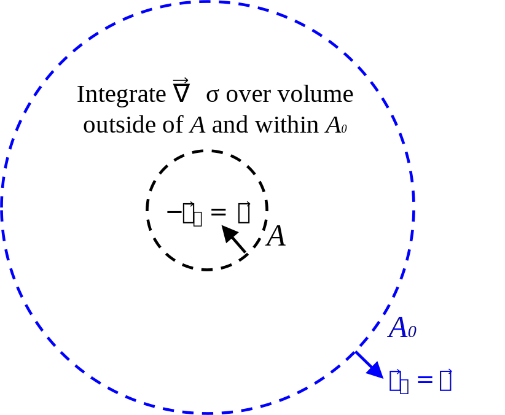

Kinetic and potential energy densities of fields predicted by linear acoustics are first derived from exact nonlinear expressions of the energies. [The acoustic Poynting theorem (a relationship following conservation of energy) is then derived, which is written in terms of the energy densities of the linear acoustic fields. This derivation is not actually needed in the calculation of radiation force.] The acoustic radiation force is calculated by appealing to the conservation of momentum, which is written in terms of the acoustic radiation stress tensor (which is in turn written in terms of the time averages of the energy densities).
The derivation of the potential and kinetic energy densities below are based on my class notes from Prof. Hamilton's Acoustics I course. These energy densities are quadratic quantities calculated by taking the product of two field variables that solve the linear acoustic wave equation.
The exact potential and kinetic energy densities of sound are \begin{align} \mathcal{E}_T &= \tfrac{1}{2} \rho u^2\,, \label{eq:acoust:WT} \\ \mathcal{E}_V &= -\frac{1}{V_0} \int_{V_0}^{V} p\,dV\,, \label{eq:acoust:WV} \end{align} where \(p = P-P_0\) is the linear acoustic field variable. Equation \eqref{eq:acoust:WT} is linearized by writing \(\rho = \rho_0 + \rho'\), where \(\rho_0\) is a constant and \(\rho'\) is the acoustic (perturbation) quantity that is a function of space and time: \[\mathcal{E}_T = \tfrac{1}{2} (\rho_0 + \rho')u^2\,.\] Neglecting the cubic term \(\rho'u^2\) yields \begin{align}\label{eq:acoust:WT:2} \boxed{\mathcal{E}_T = \tfrac{1}{2}\rho_0u^2\,.} \end{align}
Linearizing Eq. \eqref{eq:acoust:WV} is more challenging, because \(dV\) is not a convenient differential. It is desired to instead integrate over the acoustic pressure \(p\). First, \(dV\) is written in terms of \(d\rho'\), and then \(\rho'\) is related to the pressure through the linearized equation of state, as is now shown.
Volume is related to density through the relation \(M = \rho V\), where \(M\) is mass. Writing \(V = M/\rho\) allows for the calculation of the derivative \[\frac{dV}{d\rho} = - \frac{M}{\rho^2}\,.\] Solving for \(dV\) yields \begin{align} dV &= - \frac{M}{\rho^2}\,d\rho \notag\\ &= -\frac{V}{\rho}d\rho\,,\label{eq:acoust:dV} \end{align} where in Eq. \eqref{eq:acoust:dV} the fact that \(M = \rho V\) has again been invoked. Noting that \(d\rho = d(\rho_0 + \rho') = d\rho'\) and \(V = V_0 + V'\), where \(V'\) is the acoustic volume, yields \begin{align} dV &= -(V_0 + V')(\rho_0 + \rho')^{-1} d\rho'\,,\label{eq:acoust:dV:1} \end{align} where \(1/\rho\) has been written as \((\rho+\rho')^{-1}\). Noting that \begin{align*} (\rho_0+\rho')^{-1} &= \frac{(1 + \rho'/\rho_0)^{-1}}{\rho_0} \simeq \frac{1 - \rho'/\rho_0}{\rho_0}\,, \end{align*} Eq. \eqref{eq:acoust:dV:1} becomes \begin{align} dV &= -(V_0 + V')(1 - \rho'/\rho_0)\frac{d\rho'}{\rho_0}\notag\\ &= -\frac{V_0}{\rho_0} d\rho' + \text{higher-order terms}\,,\label{eq:acoust:dV:2} \end{align} where in Eq. \eqref{eq:acoust:dV:2} only the linear term has been retained. Thus Eq. \eqref{eq:acoust:WV} becomes \begin{align} \mathcal{E}_V = \frac{1}{\rho_0} \int_{0}^{\rho'} p\, d\tilde{\rho}'\,, \label{eq:acoust:WV:1} \end{align} where the integration is over \(\tilde{\rho}'\) so that the upper limit of integration is distinct from the integration variable. Equation \eqref{eq:acoust:WV:1} can be related to the acoustic pressure by appealing to the linearized equation of state \[\rho' = \frac{1}{c_0^2}p\,,\quad d\rho' = \frac{1}{c_0^2}dp,\] which is derived by Taylor expanding \(P(\rho)\) as \(P_0 + (\partial P/\partial \rho)_0 (\rho-\rho_0)\) and identifying \((\partial P/\partial \rho)_0\) as \(c_0^2\). Equation \eqref{eq:acoust:WV:1} becomes \begin{align}\label{eq:acoust:WV:2} \boxed{\mathcal{E}_V = \frac{1}{\rho_0c_0^2} \int_0^p \tilde{p}\, d\tilde{p} = \frac{p^2}{2\rho_0c_0^2 }} \end{align}
The following derivation is based on Sec. 1-11 of Ref. 5, in which it is called the "acoustic energy corollary." The theorem is not needed in deriving the radiation force, which follows from the conservation of momentum.
To derive the acoustic Poynting theorem, start with the linearized conservation of momentum, \begin{align}\label{eq:acoust:poynt:mom} \gradient p + \rho_0 \frac{\partial \vec{v}}{\partial t} = 0\,. \end{align} Dotting Eq. \eqref{eq:acoust:poynt:mom} into \(\vec{v}\) yields \begin{align}\label{eq:acoust:poynt:mom:2} \vec{v} \cdot \gradient p + \rho_0 \vec{v} \cdot \frac{\partial \vec{v}}{\partial t} = 0\,. \end{align} Noting that \(\vec{v} \cdot \partial \vec{v}/\partial t = \tfrac{1}{2} \partial v^2/\partial t\), Eq. \eqref{eq:acoust:poynt:mom:2} becomes \begin{align}\label{eq:acoust:poynt:mom:3} \vec{v} \cdot \gradient p + \tfrac{1}{2} \rho_0\frac{\partial v^2}{\partial t} = 0\,. \end{align} Noting that \(\divergence(p\vec{v}) = \vec{v} \cdot \gradient p + p \divergence \vec{v}\), and identifying the instantaneous Poynting vector \(\vec{S} = p\vec{v}\), allows for Eq. \eqref{eq:acoust:poynt:mom:3} to be written as \begin{align}\label{eq:acoust:poynt:mom:4} \divergence \vec{S} - p\divergence\vec{v} + \tfrac{1}{2}\rho_0 \frac{\partial v^2}{\partial t} = 0\,. \end{align} The third term in Eq. \eqref{eq:acoust:poynt:mom:4} is simply the time derivative of Eq. \eqref{eq:acoust:WT:2}, i.e., \(\partial \mathcal{E}_T/\partial t\). Meanwhile, the second term of Eq. \eqref{eq:acoust:poynt:mom:4} resembles the quantity that appears in the linearized conservation of mass equation, \({\partial \rho'}/{\partial t} + \rho_0 \divergence \vec{v} = 0\), which when combined with the linearized state equation \(p/c_0^2 = \rho'\), yields \begin{align}\label{eq:acoust:poynt:mass} \frac{1}{c_0^2}\frac{\partial p}{\partial t} + \rho_0 \divergence\vec{v} = 0\,. \end{align} Multiplying Eq. \eqref{eq:acoust:poynt:mass} by \(p/\rho_0\) and rearranging yields \begin{align}\label{eq:acoust:poynt:mass:2} -p\divergence\vec{v} = \frac{p}{\rho_0c_0^2}\frac{\partial p}{\partial t} = \frac{1}{2\rho_0c_0^2}\frac{\partial p^2}{\partial t} = \frac{\partial \mathcal{E}_V}{\partial t}\,, \end{align} where the last equality holds by Eq. \eqref{eq:acoust:WV:2}. Inserting Eq. \eqref{eq:acoust:poynt:mass:2} into Eq. \eqref{eq:acoust:poynt:mom:4} yields \begin{align}\label{eq:acoust:poynt:thm} \boxed{\divergence \vec{S} + \frac{\partial}{\partial t}(\mathcal{E}_V + \mathcal{E}_T) = 0\,.} \end{align}
This section is based on Sec. 2.1 of Ref. 6. There, the derivation of the acoustic radiation stress tensor is performed in index notation, while it is done symbolically here.
Neglecting terms related to viscocity, the exact conservation of momentum requires that \begin{align}\label{eq:mom:exact} \rho\frac{\partial \vec{v}}{\partial t} + \rho\vec{v} \cdot \gradient \vec{v} = -\gradient P\,. \end{align} Meanwhile, the exact continuity equation states that \begin{align}\label{eq:cont:exact} \frac{\partial \rho}{\partial t} + \divergence (\rho \vec{v}) = 0\,. \end{align} Multiplying Eq. \eqref{eq:cont:exact} by \(\vec{v}\) yields \begin{align}\label{eq:cont:exact:1} \vec{v}\frac{\partial \rho}{\partial t} + \vec{v} \divergence (\rho \vec{v}) = \vec{0}\,. \end{align} Adding Eqs. \eqref{eq:mom:exact} and \eqref{eq:cont:exact:1} yields \[\rho\frac{\partial \vec{v}}{\partial t} + \rho\vec{v} \cdot \gradient \vec{v} + \vec{v}\frac{\partial \rho}{\partial t} + \vec{v} \divergence (\rho \vec{v}) = -\gradient P\,.\] Rearranging terms yields \[\rho\frac{\partial \vec{v}}{\partial t} + \vec{v}\frac{\partial \rho}{\partial t} + \rho\vec{v} \cdot \gradient \vec{v} + \vec{v} \divergence (\rho \vec{v}) = -\gradient P\,.\] Using the product rules \(\rho\partial \vec{v}/\partial t + \vec{v}\partial \rho/\partial t = \partial(\rho\vec{v})/\partial t\) and \(\rho\vec{v} \cdot \gradient \vec{v} + \vec{v} \divergence (\rho \vec{v}) = \divergence (\rho \vec{v}\otimes \vec{v})\) (see item 1 of "Useful identities") yields \begin{align}\label{eq:take-avg} \frac{\partial (\rho\vec{v})}{\partial t} + \divergence (\rho \vec{v}\otimes \vec{v}) = -\gradient P\,. \end{align} It is now assumed that \(\rho\), \(\vec{v}\), and \(P\) in Eq. \eqref{eq:take-avg} are time-harmonic. The time average of Eq. \eqref{eq:take-avg} is taken. By item 2 of the useful identities, \(\langle {\partial (\rho\vec{v})}/{\partial t}\rangle = 0\), leaving \begin{align}\label{eq:mom:2} \langle\divergence (\rho \vec{v}\otimes \vec{v})\rangle = -\langle\gradient P\rangle\,. \end{align} Since the time averages amount to integrals over time, the spatial differential operators can be moved outside the time averages: \begin{align}\label{eq:mom:3} -\gradient \langle P\rangle -\divergence \left\langle\rho \vec{v}\otimes \vec{v}\right\rangle = \vec{0}\,. \end{align} Note by item 3 of the useful identities that \(\dyad{I} \cdot \gradient \langle P\rangle = \divergence(\dyad{I} \langle P\rangle ) - \langle P\rangle \divergence \dyad{I}\), where \(\dyad{I}\) is the identity tensor. Since \(\divergence \dyad{I} = \vec{0}\), one can equivalently write \( \dyad{I} \cdot \gradient \langle P\rangle = \divergence(\dyad{I} \langle P\rangle)\). Equation \eqref{eq:mom:3} then becomes \begin{align}\label{eq:mom:4} \divergence (-\dyad{I} \langle P\rangle -\left\langle\rho \vec{v}\otimes \vec{v}\right\rangle) = \vec{0}\,. \end{align} Noting that \(\langle P\rangle = \langle P-P_0\rangle\) and retaining terms up to quadratic order in Eq. \eqref{eq:mom:4} yields \begin{align}\label{eq:mom} \divergence (-\dyad{I} \langle P-P_0\rangle - \rho_0\left\langle \vec{v}\otimes \vec{v}\right\rangle) = \vec{0}\,. \end{align} The quantity in parentheses is identifyied as the acoustic radiation stress tensor: \begin{align}\label{eq:stress} \boxed{\dyad{\sigma} = - \dyad{I} \langle P-P_0 \rangle - \rho_0 \left\langle \vec{v}\otimes \vec{v}\right\rangle\,.} \end{align} In orthonormal index notation, the \(ij^\mathrm{th}\) component of Eq. \eqref{eq:stress} is \begin{align}\label{eq:stress:ind} {\sigma_{ij} = - \delta_{ij} \langle P-P_0 \rangle - \rho_0 \left\langle v_i v_j\right\rangle\,,} \end{align} recovering Eq. (7) of Ch. 6, Sec. 2.1.2 of Ref. 6. The letter "\(\sigma\)" is used for the stress tensor rather than "\(S\)," which is reserved for the Poynting vector. In terms of the acoustic radiation stress tensor, Eq. \eqref{eq:mom:stress} becomes \begin{align}\label{eq:mom:stress} \boxed{\divergence \dyad{\sigma} = \vec{0}\,.} \end{align}
Equation \eqref{eq:mom:stress} has units of stress per unit length, which equals force per unit volume. Integrating over volume therefore results in quantity with dimensions of force. To calculate the radiation force, first consider the spherical surface \(A\) immediately surrounding an object (enclosing a corresponding volume \(V\)), and a much larger spherical surface \(A_0\) (enclosing a corresponding volume \(V_0\) and concentric with \(A\)), as shown below:
The approach to calculate the radiation force on the object enclosed by \(A\) is attributed to Ref. 10 (which is in turn based on Ref. 9). Reference 6 (Sec. 3.1.2) summarizes the procedure in those works as follows, where the notation has been modified to fit the present conventions:
By integrating \(\divergence \dyad{\sigma} = 0\) over the space between [the surface] \(A\) and a much larger spherical surface \(A_0\) concentric with the sphere, and using Gauss's theorem, we obtain a surface integral of \(\dyad{\sigma}\cdot \vec{n}\) over \(A' = A + A_0\), equated to zero, where \(\vec{n}\) is the normal unit vector on the surface \(A'\) pointing away from the enclosed space. Since the integral over \(-\dyad{\sigma} \cdot \vec{n}\) over \(A\) is the force acting on the sphere, we have,
Equation \eqref{eq:mom:stress} is integrated over the volume within surface \(A_0\) but outside surface \(A\): \begin{equation}\label{eq:mom:stress:int:1} \int_{V_0} \divergence \dyad{\sigma}\,dV_0 - \int_V \divergence \dyad{\sigma}\,dV = \vec{0}\,. \end{equation} Upon invoking the divergence theorem, the first term in Eq. \eqref{eq:mom:stress:int:1} becomes \(\oint_{A_0} \dyad{\sigma}\cdot \vec{e}_r\, dA_0\), while the second term becomes \(-\oint_A \dyad{\sigma}\cdot \vec{e}_r\, dA\), where \(\vec{e}_r\) is the radial unit vector in spherical coordinates: \begin{equation}\label{eq:mom:stress:int:2} \oint_{A_0} \dyad{\sigma}\cdot \vec{e}_r\,dA_0 -\oint_A \dyad{\sigma}\cdot \vec{e}_r\, dA =\vec{0}\,. \end{equation} Since it is desired for the radiation force on the object enclosed by \(A\) to be defined with respect to the inward normal, \(\vec{n}\) is identified as \(-\vec{e}_r\) on \(A\), while it \(\vec{n}\) is identified as \(\vec{e}_r\) on \(A_0\), as shown in the figure above: \begin{equation}\label{eq:mom:stress:int:3} \oint_{A_0} \dyad{\sigma}\cdot \vec{n}\,dA_0 + \oint_A \dyad{\sigma}\cdot \vec{n}\, dA =\vec{0}\,. \end{equation} Solving Eq. \eqref{eq:mom:stress:int:3} for \(-\oint_A \dyad{\sigma}\cdot \vec{n}\, dA\) results in the radiation force on the object enclosed by \(A\): \begin{equation}\label{eq:mom:stress:int} \boxed{\vec{F}\rad = -\oint_A \dyad{\sigma}\cdot \vec{n}\, dA = \oint_{A_0} \dyad{\sigma}\cdot \vec{n}\,dA_0 \,.} \end{equation} When expressed in terms of Eq. \eqref{eq:stress:ind} (the indicial form of the acoustic radiation stress tensor), Eq. \eqref{eq:mom:stress:int} recovers Eq. (82) of Ref. 6: \begin{equation}\label{eq:mom:stress:int:ind} {F}_{\text{rad } i} = \oint_A [\delta_{ij} \langle P-P_0 \rangle + \rho_0 \left\langle v_i v_j\right\rangle] \, {n}_j\, dA = -\oint_{A_0} [\delta_{ij} \langle P-P_0 \rangle + \rho_0 \left\langle v_i v_j\right\rangle]\, {n}_j\,dA_0 \,. \end{equation} [Note that typo in Eq. (82) of Ref. 6: \(F_z\) should read \(F_i\). The force becomes \(F_z\) in Eq. (84), in which azimuthal symmetry has been assumed in Eq. (83).]